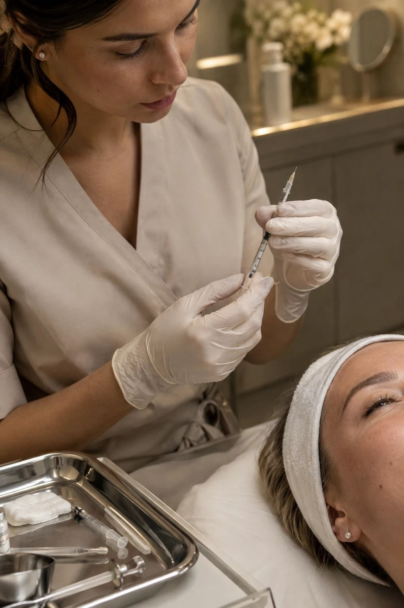

Ботулинотерапия
Расслабляет мимические мышцы и разглаживает морщины лба, межбровья и вокруг глаз. Также корректирует овал лица («Нефертити») и помогает при гипергидрозе. Процедуру проводит врач после консультации.

Что корректирует
Лоб
Горизонтальные морщины
от 6 900 ₽Межбровье
Вертикальные заломы, «хмурый» взгляд
от 6 900 ₽Зона вокруг глаз
«Гусиные лапки»
от 6 900 ₽Лифтинг Нефертити
Чёткий овал и шея
от 17 000 ₽Full Face
Комплексная коррекция всего лица
от 30 000 ₽Гипергидроз
Избыточная потливость подмышек
от 30 000 ₽Цены
Цены указаны «от» и зависят от количества единиц препарата и зоны. Точную стоимость врач назовёт на консультации.
Как проходит процедура
Консультация
Врач оценивает мимику, обсуждает результат и исключает противопоказания
Разметка
Отмечает точки введения под вашу мимику и анатомию
Процедура
Несколько микроинъекций тонкой иглой — около 30 минут
Контроль
Осмотр через 2 недели и при необходимости коррекция
Кто проводит
Врач-косметолог
Записаться →Врач-косметолог
Записаться →Главный врач клиники
Записаться →Частые вопросы
Не нашли ответ — спросите ИИ-косметолога или позвоните администратору.
Записаться на ботулинотерапию
Администратор перезвонит, подберёт время и врача. Имеются противопоказания, необходима консультация специалиста.